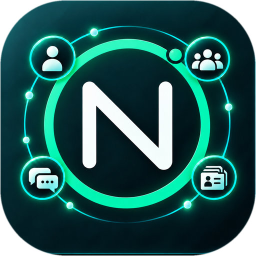

Windows
Para computadores com Windows 64 bits. O download atual é a versão anterior NEXA 1.9.52, enquanto a edição NARUB passa por testes.
Baixar para Windows ↓
Gerencie diversas contas do WhatsApp em um único aplicativo. Mais organização e praticidade para sua rotina.
Para computadores com Windows 64 bits. O download atual é a versão anterior NEXA 1.9.52, enquanto a edição NARUB passa por testes.
Baixar para Windows ↓Para computadores Mac com processadores Intel ou Apple. O download atual é a versão anterior NEXA 1.9.52, enquanto a edição NARUB passa por testes.
Baixar para macOS ↓Organize suas conversas em um só espaço.
Alterne entre contas com praticidade.
Foque no que importa.